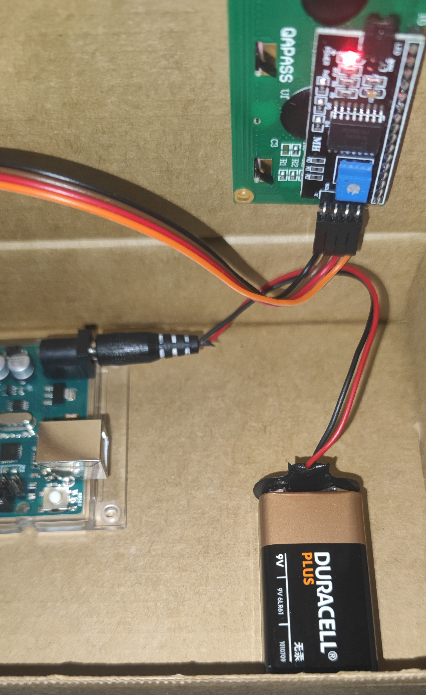
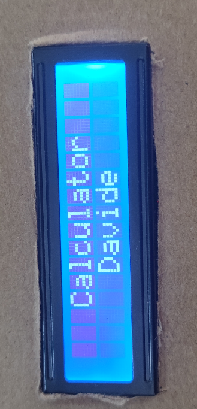
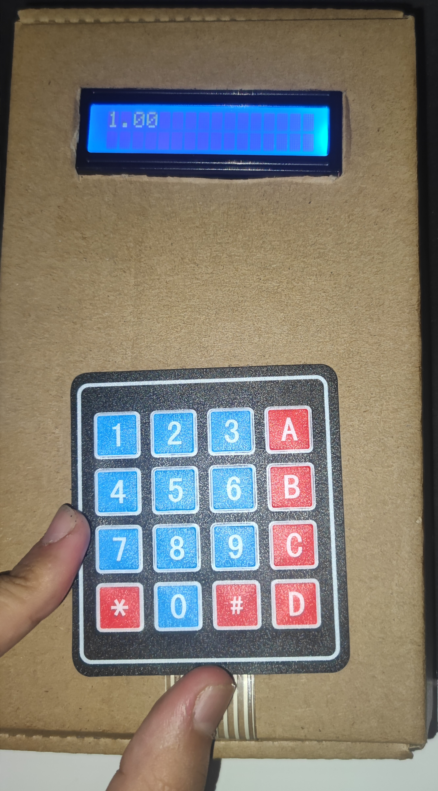
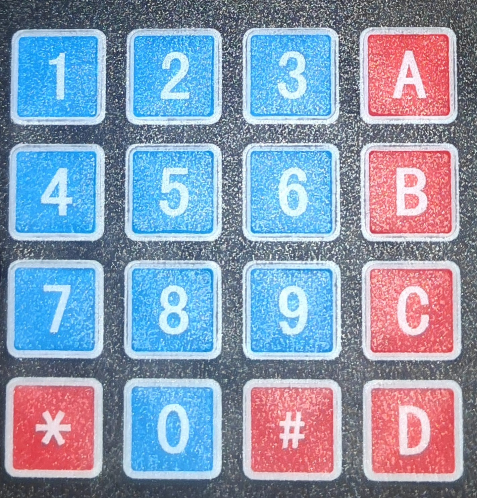

Per inciar la calculadora connectarem el cable connector de la batería
al jack de l'Arduino per engegar-la.

Ara amb la calculadora funcionant veurem com el display LCD
s'engega posant "Calcutor Davide".

Per començar hem d'entendre les funcions que tenim a la calculadora,
si analitzem el keypad podem veure les diferents operacions que podem fer.

Per començar els botons blaus están marcats pel seu número corresponentent.
Els botons vermells son funcions, el botó "A": es la suma (+), el botó "B": és
la resta (-), el botó "C": és la multiplicació (x), el botó "D": és la divisió (/),
el botó "#": és la operació módul (%) i el botó "*": és l'igual (=).

Sabent com funcionen les tecles ja podem començar a fer operacions. A continuació teniu
un video, recomano fer gran el vídeo per veure'l millor.